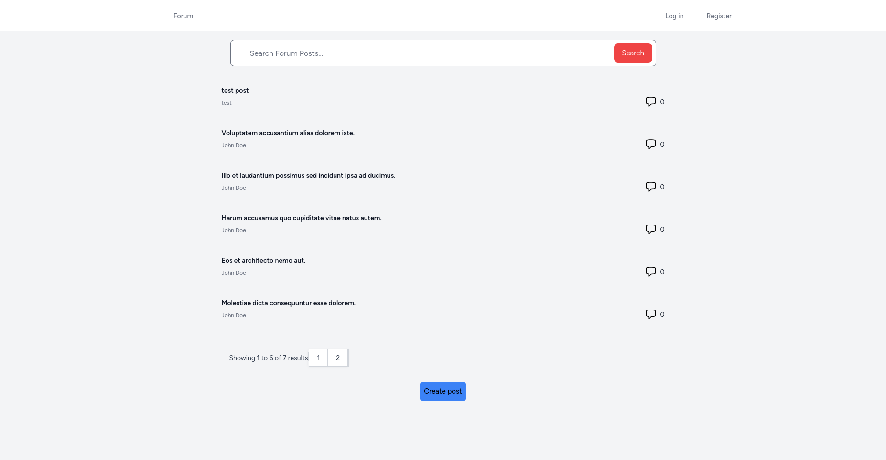
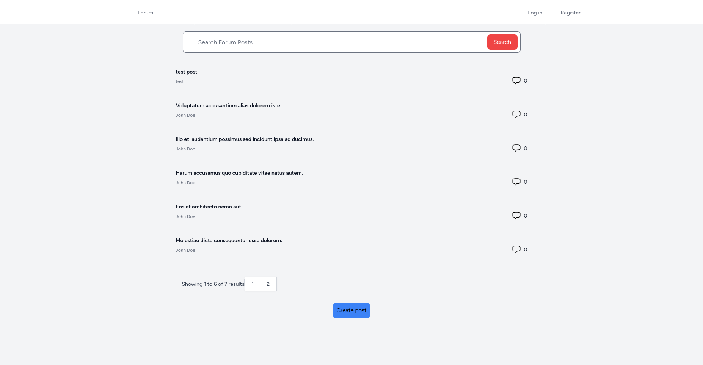

Projects
 

Real Estate Company Project
×
This project is loosely based on the Zoopla website - with ability for users to search for and view properties and agents, register an account to save properties, andforagentstouploadproperties. TheprojectusesanExpressAPIconnected to a MongoDB database containing property data, and a MySQL database containing user data, a React frontend, an AWS S3 bucket to store uploaded photos and provide custom URLs for viewing photos, and Mapbox to display maps. The project uses Nginx both to serve static React files and as a reverse proxy in order to connect to the API from the frontend. The project runs inside docker containers and stores JWT tokens as cookies when users log in and certbot to enable HTTPS. Most of the technology used to build this project was chosen for the purposes of learning, however some descisions were made to make use of a certain technology’s unique features. For instance, MongoDB was used for storing property data as it has built in geospatial queries, which were useful when querying the database for a property with a given radius, and Docker was used to ensure the development environment was more consistent with the production environment